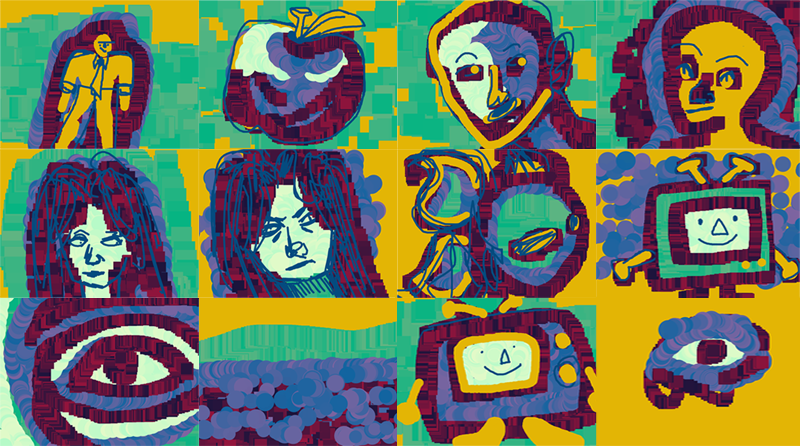

With this assignment, I wanted to be ambitious and try coding beyond the basic drawing functions I had learned so far. While coding JimBob (blue hair) I felt as if he needed a friend,
so I then created TimTam, his twin sister. Both clowns are mostly comprised of ellipses, however, I challenged myself with attempting to wrangle triangles for their mouths. I've always liked creating
little characters, and hope to use JimBob and TimTam in a different project of mine in the future. They are extremely silly, and bring me such joy.
TimTam was created in accordance with the extra credit mentioned on the Art 101 website.
Run Final Version Exercise 1
See code for Final Version Exercise 1
With this assignsment, I aimed to include my personal artwork within the code, since I spent so long illustrating the assets in Photoshop.
Originally, the flowers were for a project I made for Maker Faire 2025, of which I was extremely proud of. Thus, I used Excercise 2 as an extension of that project.
I found that assigning each asset to a command created a collage-like effect on my canvas, especially since the mouseX and mouseY commands created a painted trail of words across the background.
Thus, I consider this work, to be almost like a beta version of my Project 1 brush sets.
Run Exercise 2
See code for Exercise 2
For Project 1, I aimed to make a drawing program focused mostly on splatter brushes combined with a single line brush for lineart. Since my art style is very painterly, I stuck with establishing shadows, midtones, and highlights with my
brushes to easily mimic how I would draw in Photoshop. Additonally, I wanted to use a vibrant color palette, since I usually use vibrant hues within my personal illustrations.
Overall, I found that the most challenging part of creating the brushes was assigning them the exact color I wanted, since the random() command I used messed with the hues of the orignal palette. It was also quite challenging creating art with a mouse, since I am so accustom to my Huion tablet.
Since my tablet did not work as well with the website, I had to attempt clean linework with my mouse, of which had varying success.
